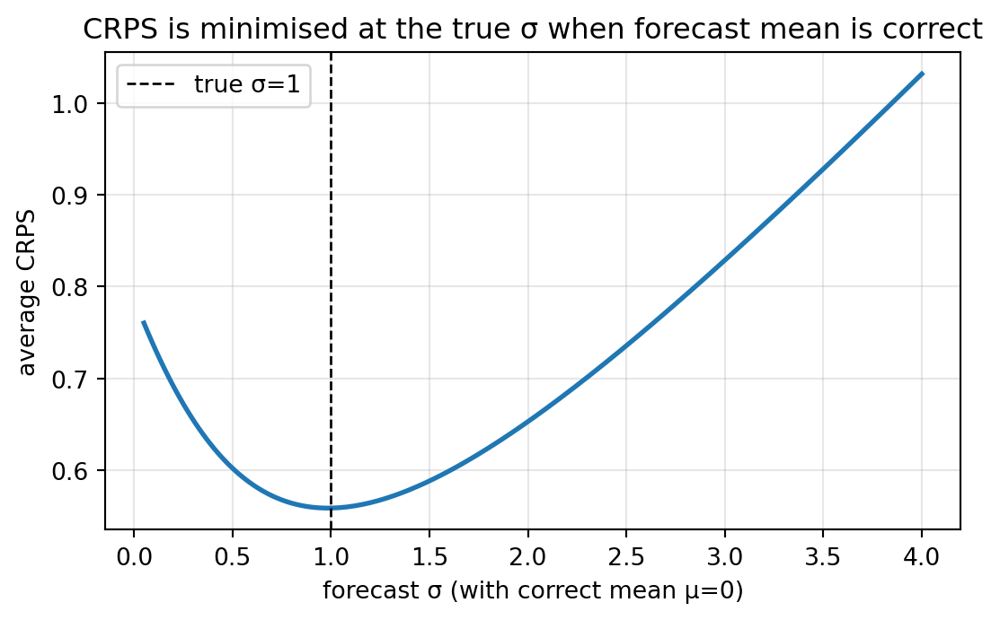

MSE가 기본 손실이 되어 있는 이유는 편리하기 때문이지 옳기 때문이 아닙니다. 이 글은 각기 다른 문제에 맞는 세 가지 손실 — 분위수 예측용 핀볼(pinball), 이상치가 있는 회귀용 Huber, 확률 예측용 CRPS — 를 작은 PyTorch 모듈로 처음부터 구현하고, 그 기울기와 형태를 살펴본 뒤, 합성 데이터 위에서 각각이 MSE와 어떻게 다르게 동작하는지 보입니다.
저자
Prof. Shin
공개
2026-07-17
[개념 시각화] 본 포스트의 핵심 개념을 요약한 다이어그램입니다.
기본 손실은 중립적 선택이 아닙니다
대부분의 PyTorch 튜토리얼에서 학습 목적 함수는 nn.MSELoss()로 정해져 있습니다. 매끄럽고 볼록하며 어디서든 미분 가능하고, 조건부 평균을 최소화한다는 점에서 편리하지만, 이 각각의 성질은 동시에 하나의 가정이기도 합니다. 조건부 평균이 예측의 정답이 되는 것은 후속 결정이 제곱오차 결정일 때뿐이고, 큰 오차에 민감한 것이 옳은 행동인 것은 그 큰 오차가 잡음이 아니라 정보일 때뿐이며, 점 예측 하나가 충분한 것은 예측의 불확실성을 사용자가 필요로 하지 않을 때뿐입니다.
시계열 예측은 이 세 가정을 한꺼번에 어깁니다. 소매 수요 계획은 평균이 아니라 90분위수를 봅니다. 재고 부족과 과잉의 비용이 다르기 때문입니다. 센서 데이터에는 시계 편이나 하드웨어 결함에서 오는 이상치가 섞이는데, 이는 모델이 학습해야 할 신호가 아닙니다. 그리고 그 뒤에 붙는 어떤 리스크 계산이든 — 예비 용량, 제어 여유, 헤지 규모 — 결국 점 추정치가 아니라 예측 분포 전체의 함수입니다.
세 가지 손실이 부족한 부분 대부분을 채워 줍니다. 비대칭 비용의 점 예측 및 여러 분위수를 통한 분포 전체 모델링에 쓰이는 핀볼 (pinball, 분위수) 손실, 잡음이 두꺼운 꼬리(heavy tail)를 가질 때 쓰이는 Huber 손실, 그리고 확률 예측을 학습·평가하기 위한 연속형 순위 확률 점수(continuous ranked probability score, CRPS)가 그것입 니다. 구현 자체는 각각 짧지만, 손실과 그 기울기의 모양이 모델이 실제로 무엇을 배우는지를 결정합니다.
손실을 값이 아니라 모양과 기울기로 보기
학습 중 손실의 동작을 결정하는 것은 값 자체가 아니라 기울기입니다. MSE와 MAE가 실질적으로 크게 다른 것도 이 때문입니다. 두 손실 모두 목표 분포의 “가운데”에서 최소화되지만, 최소화에 도달하는 방식이 다릅니다. 구현 전에 네 손실을 나란히 정리해 보는 것이 좋습니다.
MSE에서 중요한 것은 기울기가 \(|e|\)에 비례해 무한정 커진다는 점입니다. \(|e|=10\)인 한 점의 기울기 크기가 \(10\)이 되어, \(|e|=1\)인 열 점의 합과 같아집니다. 이 성질이 MSE를 학습하기 쉽게 만드는 이유이자 이상치에서 위험하게 만드는 이유입니다.
핀볼의 기울기는 구간별 상수입니다. 분위수 수준 \(\tau\)가 주어지면 모든 저평가는 동일하게 \(-\tau\), 모든 고평가는 동일하게 \(1-\tau\)를 기여합니다. \(\tau\)를 선택한다는 것은 이 두 상수의 비율을 정하는 것이고, 이 비율이 곧 적합선 위·아래의 점 비율을 결정합니다. 최적해에서 양의 잔차 비율이 정확히 \(\tau\)가 되는데, 이는 부산물이 아니라 손실 정의에 이미 새겨져 있는 성질입니다.
Huber의 기울기는 작은 오차에서 \(e\), 큰 오차에서 \(\pm \delta\)로 잘려 있습니다. MSE와 MAE 사이의 자연스러운 보간입니다. 이미 잘 맞은 영역(0 근처)에서는 MSE의 매끄러움을 유지해 미세 조정에 도움을 주고, 이상치 영역(0에서 멀리)에서는 MAE처럼 기울기가 유계여서 튀는 값이 학습을 지배하지 못하게 합니다.
이 모두를 하나의 그림으로 그려 봅니다.
import torchimport matplotlib.pyplot as plte = torch.linspace(-3, 3, 601)def pinball_val(e, tau):return torch.maximum(tau * e, (tau -1.0) * e)def huber_val(e, delta): a = e.abs()return torch.where(a <= delta, 0.5* e * e, delta * (a -0.5* delta))fig, axes = plt.subplots(2, 3, figsize=(11, 6.4))# 상단: 손실 값axes[0, 0].plot(e, 0.5* e **2, lw=2, label="MSE (½e²)")axes[0, 0].plot(e, e.abs(), lw=2, ls="--", label="MAE (|e|)")axes[0, 0].set_title("MSE vs MAE"); axes[0, 0].legend(); axes[0, 0].grid(alpha=0.3)for tau in (0.1, 0.5, 0.9): axes[0, 1].plot(e, pinball_val(e, tau), lw=2, label=f"τ={tau}")axes[0, 1].set_title("Pinball loss"); axes[0, 1].legend(); axes[0, 1].grid(alpha=0.3)for d in (0.3, 1.0, 3.0): axes[0, 2].plot(e, huber_val(e, d), lw=2, label=f"δ={d}")axes[0, 2].plot(e, 0.5* e **2, lw=1, ls=":", color="grey", label="MSE ref")axes[0, 2].set_title("Huber loss"); axes[0, 2].legend(); axes[0, 2].grid(alpha=0.3)# 하단: 예측에 대한 기울기 (= -dL/de)axes[1, 0].plot(e, -e, lw=2, label="dMSE/dŷ = -e")axes[1, 0].plot(e, -torch.sign(e), lw=2, ls="--", label="dMAE/dŷ = -sign(e)")axes[1, 0].axhline(0, color="k", lw=0.5); axes[1, 0].legend(); axes[1, 0].grid(alpha=0.3)axes[1, 0].set_title("MSE vs MAE gradient")for tau in (0.1, 0.5, 0.9): g = torch.where(e >=0, torch.tensor(-tau), torch.tensor(1.0- tau)) axes[1, 1].plot(e, g, lw=2, drawstyle="steps-mid", label=f"τ={tau}")axes[1, 1].axhline(0, color="k", lw=0.5); axes[1, 1].legend(); axes[1, 1].grid(alpha=0.3)axes[1, 1].set_title("Pinball gradient (piecewise constant)")for d in (0.3, 1.0, 3.0): g = torch.where(e.abs() <= d, -e, -d * torch.sign(e)) axes[1, 2].plot(e, g, lw=2, label=f"δ={d}")axes[1, 2].axhline(0, color="k", lw=0.5); axes[1, 2].legend(); axes[1, 2].grid(alpha=0.3)axes[1, 2].set_title("Huber gradient (clipped linear)")for ax in axes[-1]: ax.set_xlabel("error e = y - ŷ")fig.tight_layout()plt.show()
그림 1: MSE·MAE·핀볼(세 분위수)·Huber(세 δ)의 손실 값(상단)과 예측에 대한 기울기(하단).
그림에서 두 가지를 읽을 수 있습니다. 첫째, 핀볼은 \(\tau=0.5\)에서 \(|e|/2\)와 같아집니다. 중앙값 회귀가 분위수 회귀의 특수 경우임을 보여 주며, 핀볼 기울기 세 개는 우측에서 \(-\tau\), 좌측에서 \(1-\tau\)의 수평선인데, 이 상수 비율이 곧 적합 후 양의 잔차 비율을 결정한다는 사실이 한눈에 들어옵니다. 둘째, Huber의 전이는 \(|e|=\delta\)에서 값은 매끄럽지만 기울기는 꺾여 있습니다. \(\delta\)가 작으면 손실이 MAE에 가까워지고, 아주 크면 MSE로 복원되며, 일반적인 선택은 잡음 표준편차의 1~2배 정도입니다.
핀볼 손실과 분위수 예측
특성 \(X\)가 주어졌을 때 확률변수 \(Y\)의 조건부 \(\tau\)-분위수 \(\hat{q}_\tau(X)\)를 예측하려 한다고 합시다. Koenker와 Bassett(1978) 은 핀볼 위험의 모집단 최소화가 정확히 이 조건부 분위수임을 보였습니다:
\[\hat{q}_\tau(x) = \arg\min_{f} \; \mathbb{E}\bigl[ L_\tau(Y - f(X)) \mid X = x \bigr].\]
코드로 옮기면 결과는 아주 직접적입니다. MSE를 핀볼(\(\tau=0.9\))로 교체하면, 같은 아키텍처·같은 옵티마이저 위에서 출력값이 곧 90분위수가 되는 네트워크가 학습됩니다.
import torchimport torch.nn as nnclass PinballLoss(nn.Module):""" Pinball (quantile) loss. - tau가 스칼라이면 단일 분위수 손실, 예측 shape은 (..., ). - tau가 길이 K의 1D 텐서이면 예측의 마지막 차원이 K여야 하고, target은 마지막 차원으로 브로드캐스팅됩니다. """def__init__(self, tau, reduction: str="mean"):super().__init__() tau = torch.as_tensor(tau, dtype=torch.float32)self.register_buffer("tau", tau)self.reduction = reductiondef forward(self, pred: torch.Tensor, target: torch.Tensor) -> torch.Tensor:# multi-quantile head인 경우 target을 마지막 축으로 브로드캐스팅ifself.tau.ndim ==1and pred.shape[-1] ==self.tau.numel(): target = target.unsqueeze(-1) e = target - pred loss = torch.maximum(self.tau * e, (self.tau -1.0) * e)ifself.reduction =="mean": return loss.mean()ifself.reduction =="sum": return loss.sum()return loss
구현에서 짚을 만한 두 가지가 있습니다. 하나는 \(e=0\)에서 열등미분 (subgradient)이 유일하지 않다는 점입니다. torch.maximum은 두 가지를 어느 쪽인가로 결정하는데, 핀볼에서는 이 결정이 상관없습니다. 등가 집합의 측도가 0이기 때문입니다. 또 하나는 tau를 학습 파라미터가 아닌 버퍼로 등록해 두면 .to(device) 시 함께 이동한다는 위생상의 이점입니다.
분위수 성질을 직접 확인하기 위해, 잡음의 분산이 \(|x|\)에 따라 커지는 이분산(heteroscedastic) 데이터 위에서 \(\tau \in \{0.1, 0.5, 0.9\}\) 용 세 개의 출력 헤드를 가진 공유 MLP를 학습시킵니다.
import torchimport torch.nn as nnimport matplotlib.pyplot as plttorch.manual_seed(0)# 데이터: y = 1.5 sin(x) + N(0, sigma(x)^2), sigma(x) = 0.3 + 0.4|x|n =500x = torch.linspace(-2, 2, n).unsqueeze(1)sigma =0.3+0.4* x.abs()y =1.5* torch.sin(x) + sigma * torch.randn_like(x)y = y.squeeze(1)taus = torch.tensor([0.1, 0.5, 0.9])K = taus.numel()class QuantileMLP(nn.Module):def__init__(self, K=3, hidden=32):super().__init__()self.trunk = nn.Sequential( nn.Linear(1, hidden), nn.ReLU(), nn.Linear(hidden, hidden), nn.ReLU(), )self.head = nn.Linear(hidden, K)def forward(self, x):returnself.head(self.trunk(x))model = QuantileMLP(K=K)opt = torch.optim.Adam(model.parameters(), lr=0.01)crit = PinballLoss(tau=taus)for step inrange(3000): opt.zero_grad() pred = model(x) # (n, K) loss = crit(pred, y) loss.backward() opt.step()with torch.no_grad(): pred = model(x).numpy()# 학습 데이터 위에서 80% 밴드의 실제 커버리지covered = ((y.numpy() >= pred[:, 0]) & (y.numpy() <= pred[:, 2])).mean()print(f"Final pinball loss: {loss.item():.4f}")print(f"Empirical coverage of 80% band on training data: {covered:.3f}")xs = x.numpy().ravel()true_mean = (1.5* torch.sin(x)).numpy().ravel()fig, ax = plt.subplots(figsize=(7, 4.2))ax.scatter(xs, y.numpy(), s=8, alpha=0.4, label="data (heteroscedastic)")ax.fill_between(xs, pred[:, 0], pred[:, 2], alpha=0.2, label="80% band (τ=0.1–0.9)")ax.plot(xs, pred[:, 1], lw=2, label="median (τ=0.5)")ax.plot(xs, true_mean, "k--", lw=1.5, label="true mean")ax.legend(); ax.grid(alpha=0.3)ax.set_xlabel("x"); ax.set_ylabel("y")ax.set_title("Quantile bands from a shared MLP trained with pinball loss")plt.show()
Final pinball loss: 0.1725
Empirical coverage of 80% band on training data: 0.812
그림 2: 핀볼 손실을 결합해 학습한 MLP의 10/50/90 분위수 밴드. 파란 영역은 10-90 구간, 검정 점선은 참 평균.
그림에서 두 가지를 볼 수 있습니다. 잡음이 커지는 구간에서 밴드가 넓어집니다. 10분위수와 90분위수 헤드가 각자의 조건부 분위수를 쫓기 때문에, 분산 모델을 따로 명시하지 않아도 손실이 이분산 구조를 자동으로 포착합니다. 그리고 위에서 출력된 실제 커버리지는 \(\tau_{0.9} -
\tau_{0.1} = 0.8\)에 가깝게 나옵니다. 손실이 잘 최적화되었다면 학습 셋 위에서 기대되는 값이며, 여기서 큰 편차가 있다면 두 헤드가 서로 교차했거나 모델이 목표 분위수까지 유연하게 도달하지 못한 신호로 보아야 합니다.
헤드 교차(head crossing)는 독립 분위수 적합의 주된 병리입니다. 세 헤드가 서로 별개로 학습되기 때문에, 학습 목적 함수 안에서 \(\hat{q}_{0.1} \le \hat{q}_{0.5} \le \hat{q}_{0.9}\)를 강제하는 것이 아무것도 없습니다. 사후 정렬이 흔한 처방이고, 원리적으로 더 나은 방법으로는 단조 신경망, 비교차(non-crossing) 벌점 항을 추가한 동시 분위수 회귀 등이 있습니다. 예제에서는 공유 트렁크와 매끄러운 데이터 덕분에 헤드 순서가 유지되지만, 이는 일반적으로 기대할 만한 성질이 아닙니다.
Huber 손실과 강건 회귀
Huber(1964)는 오늘날 그 이름이 붙은 이 구간별 손실을 제안했는데, 가우시안 모형에서 효율적이면서도 영향력(influence)이 유계인 추정량을 쓰기 위해서였습니다. 아주 큰 잔차 하나가 적합선을 끌 수 있는 양이 잔차 크기 자체가 아니라 \(\delta\)에 비례하도록 제한됩니다.
import torchimport torch.nn as nnclass HuberLoss(nn.Module):def__init__(self, delta: float=1.0, reduction: str="mean"):super().__init__()assert delta >0.0self.delta =float(delta)self.reduction = reductiondef forward(self, pred: torch.Tensor, target: torch.Tensor) -> torch.Tensor: e = target - pred a = e.abs() quad =0.5* e * e lin =self.delta * (a -0.5*self.delta) loss = torch.where(a <=self.delta, quad, lin)ifself.reduction =="mean": return loss.mean()ifself.reduction =="sum": return loss.sum()return loss
PyTorch에는 이미 nn.SmoothL1Loss(Huber를 \(\delta\)로 나눈 형태)와 nn.HuberLoss가 있습니다. 그럼에도 한 번쯤 직접 짜 보는 것이 좋은 이유는 두 가지입니다. 우선 내장 손실의 API가 버전마다 다르고, \(\delta\)가 실제로 어떤 역할을 하는지 정의를 통해 눈으로 보아야 감이 잡히기 때문입니다. \(\delta\)를 고른다는 것은 사실상 “정상”으로 간주할 잡음 규모를 정하는 일입니다. \(\delta\) 이내의 잔차는 가우시안으로, \(\delta\)를 벗어난 잔차는 하향 가중해야 할 이상치로 취급됩니다. \(\delta = 1.345 \hat\sigma\)라는 어림값은 가우시안에서 점근적으로 95% 효율을 내며, 잡음 규모를 대략 알고 있는 경우 시작점으로 쓸 만한 값입니다.
차이를 눈으로 보기 위해, 5%의 가우시안 이상치가 섞인 선형 과정에 \(y = ax + b\)를 두 번 적합합니다. 한 번은 MSE, 한 번은 Huber로 합니다.
import torchimport torch.nn as nnimport matplotlib.pyplot as plttorch.manual_seed(0)n =400x = torch.linspace(-1, 1, n)y_clean =2.0* x +0.2y = y_clean +0.15* torch.randn(n)# 이상치 주입mask = torch.rand(n) <0.05n_out =int(mask.sum().item())y[mask] = y[mask] +4.0* torch.randn(n_out)def fit(loss_module, iters=6000, lr=0.03): a = torch.tensor(0.0, requires_grad=True) b = torch.tensor(0.0, requires_grad=True) opt = torch.optim.Adam([a, b], lr=lr)for _ inrange(iters): opt.zero_grad() pred = a * x + b loss = loss_module(pred, y) loss.backward() opt.step()return a.item(), b.item()a_mse, b_mse = fit(nn.MSELoss())a_hub, b_hub = fit(HuberLoss(delta=0.2))print(f"OLS : a={a_mse:.3f}, b={b_mse:.3f}")print(f"Huber : a={a_hub:.3f}, b={b_hub:.3f} (true a=2.000, b=0.200)")xs = torch.tensor([-1.05, 1.05])fig, ax = plt.subplots(figsize=(7, 4.2))ax.scatter(x.numpy(), y.numpy(), s=8, alpha=0.5, label="data with 5% outliers")ax.plot(xs.numpy(), (2.0* xs +0.2).numpy(), "k--", lw=1.5, label="ground truth")ax.plot(xs.numpy(), (a_mse * xs + b_mse).numpy(), color="tab:red", lw=2, label=f"OLS (a={a_mse:.2f}, b={b_mse:.2f})")ax.plot(xs.numpy(), (a_hub * xs + b_hub).numpy(), color="tab:green", lw=2, label=f"Huber δ=0.2 (a={a_hub:.2f}, b={b_hub:.2f})")ax.set_xlabel("x"); ax.set_ylabel("y")ax.set_title("Robustness: MSE vs Huber under 5% Gaussian outliers")ax.grid(alpha=0.3); ax.legend()plt.show()
그림 3: OLS(빨강)는 5% 이상치에 끌려가고, Huber(δ=0.2, 초록)는 참값(점선)에 가깝게 남습니다.
두 적합 모두 기댓값에서는 편향이 없으므로, 데이터가 충분하면 둘 다 참값에 수렴합니다. 그림이 보여 주는 것은 유한 표본에서의 강건성입니다. 표본 크기가 고정되고 5% 오염이 있을 때 Huber의 기울기와 절편이 참값에 더 가깝게 남는 이유는 각 이상치의 영향력이 \(\delta\)로 유계이기 때문입니다. 차이의 크기는 오염 비율과 이상치 규모에 따라 달라지며, 이 문제에서는 시드에 따라 그 차이가 크지 않아도 방향은 일관됩니다. Huber가 대가로 치르는 것은 순수 가우시안 모형에서의 효율입니다. 이상치가 전혀 없다면 OLS보다 통계적 효율이 살짝 떨어지며, 이 절충이 Huber(1964)의 원래 설계 지점이었습니다.
Huber만이 강건 손실은 아닙니다. Cauchy나 Tukey biweight 손실은 더 멀리 나아가서, 어떤 거리 이상에서는 기울기가 0이 되는 재하강 (redescending) 성질까지 갖습니다. 대가는 손실 곡면이 비볼록이라는 점입니다. Huber의 강점은 볼록성입니다. 평범한 옵티마이저로도 재하강 손실에서 문제가 되는 지역 최솟값 없이 전역 최솟값에 도달합니다.
CRPS: 분포 전체를 평가하는 프로퍼 스코어
MSE는 평균을, MAE는 중앙값을, 핀볼(\(\tau\))은 단일 분위수를 평가합니다. 예측 분포 전체가 참값을 얼마나 잘 설명하는지를 하나의 수로 재고, 그 수가 엄격 프로퍼(strictly proper) — 참분포를 보고할 때에만 기댓값 기준으로 최소화됨 — 하려면 연속형 순위 확률 점수(CRPS; Matheson & Winkler, 1976; Gneiting & Raftery, 2007)가 필요합니다.
로 정의됩니다. 적분 안의 항은 모든 \(z\)에서 예측 CDF를 “완벽한” 계단 함수 CDF(진리인 \(y\)에 델타)와 비교합니다. 두 가지 유용한 등가 형태가 있습니다. \(F\)가 가우시안 \(\mathcal{N}(\mu, \sigma^2)\)일 때 적분은 닫힌 형태를 가집니다(Gneiting et al., 2005):
첫 항은 정확도 — 예측 표본이 \(y\)에 가까울수록 보상 — 를, 둘째 항은 샤프니스 — 예측 표본이 지나치게 뭉쳐 있으면 벌점 — 를 잡습니다. CRPS는 위치 항과 산포 항의 합이며, 두 항 모두를 최소화하는 지점이 곧 참분포입니다.
import torchimport torch.nn as nnimport mathclass CRPSGaussianLoss(nn.Module):""" 가우시안 예측 N(mu, sigma^2)에 대한 CRPS. pred shape: (..., 2), 마지막 축 = (mu, log_sigma). """def__init__(self, reduction: str="mean"):super().__init__()self.reduction = reduction@staticmethoddef _phi(z):return torch.exp(-0.5* z * z) / math.sqrt(2.0* math.pi)@staticmethoddef _Phi(z):return0.5* (1.0+ torch.erf(z / math.sqrt(2.0)))def forward(self, pred: torch.Tensor, target: torch.Tensor) -> torch.Tensor: mu = pred[..., 0] sigma = torch.nn.functional.softplus(pred[..., 1]) +1e-6 z = (target - mu) / sigma crps = sigma * (z * (2.0*self._Phi(z) -1.0)+2.0*self._phi(z)-1.0/ math.sqrt(math.pi))ifself.reduction =="mean": return crps.mean()ifself.reduction =="sum": return crps.sum()return crpsclass CRPSEnsembleLoss(nn.Module):""" 관측당 M개 멤버로 이루어진 앙상블 CRPS의 무편 유한표본 추정. pred shape: (..., M). 쌍대 항의 분모를 M^2가 아니라 M(M-1)로 두어 무편성을 얻습니다. """def__init__(self, reduction: str="mean"):super().__init__()self.reduction = reductiondef forward(self, members: torch.Tensor, target: torch.Tensor) -> torch.Tensor:# target을 (..., 1)로 broadcast하여 M축과 빼기 가능하게 만듦 M = members.shape[-1] y = target.unsqueeze(-1) term_a = (members - y).abs().mean(dim=-1)# pairwise |x_i - x_j|를 2 M (M-1)로 나눔 -> 무편 diff = (members.unsqueeze(-1) - members.unsqueeze(-2)).abs() term_b = diff.sum(dim=(-1, -2)) / (2.0* M * (M -1)) crps = term_a - term_bifself.reduction =="mean": return crps.mean()ifself.reduction =="sum": return crps.sum()return crps
가우시안 형태는 표준화된 \(z = (y - \mu) / \sigma\)만 있으면 되고, 앙상블 형태는 표본 간 절대차만 쓰므로 \(x_i\)에 대해 미분 가능합니다. 즉 앙상블을 출력하는 모델(예: 예측을 \(M\)번 샘플링하는 MC-Dropout 네트워크)을 CRPS로 end-to-end 학습할 수 있습니다.
CRPS가 실제로 무엇을 보상하는지 보기 위해, 고정된 \(y\) 주변에서 \(\mu\) 와 \(\sigma\)를 변화시켜 점수 표면을 그려 보고, “참 \(\sigma\)에서 최솟값” 성질을 수치적으로 확인합니다.
import torch, mathimport matplotlib.pyplot as pltdef crps_gauss(y, mu, sigma): z = (y - mu) / sigma Phi =0.5* (1.0+ torch.erf(z / math.sqrt(2.0))) phi = torch.exp(-0.5* z * z) / math.sqrt(2.0* math.pi)return sigma * (z * (2.0* Phi -1.0) +2.0* phi -1.0/ math.sqrt(math.pi))mus = torch.linspace(-3, 3, 400)sigs_axis = torch.linspace(0.1, 3.0, 400)fig, axes = plt.subplots(1, 2, figsize=(11, 3.6))for s in (0.3, 1.0, 2.0): axes[0].plot(mus, crps_gauss(torch.tensor(0.0), mus, torch.tensor(s)), lw=2, label=f"σ={s}")axes[0].set_title("CRPS(N(μ,σ²) | y=0) vs μ")axes[0].set_xlabel("forecast mean μ"); axes[0].set_ylabel("CRPS")axes[0].legend(); axes[0].grid(alpha=0.3)for mu in (0.0, 0.5, 1.0): axes[1].plot(sigs_axis, crps_gauss(torch.tensor(0.0), torch.tensor(mu), sigs_axis), lw=2, label=f"|μ|={mu}")axes[1].set_title("CRPS(N(μ,σ²) | y=0) vs σ")axes[1].set_xlabel("forecast std σ"); axes[1].set_ylabel("CRPS")axes[1].legend(); axes[1].grid(alpha=0.3)fig.tight_layout()plt.show()torch.manual_seed(0)y_samples = torch.randn(4000) # 참분포 N(0,1)sigs = torch.linspace(0.05, 4.0, 200)avg_crps = torch.stack([crps_gauss(y_samples, torch.tensor(0.0), s).mean() for s in sigs])print(f"argmin σ (should be near 1.0): {sigs[avg_crps.argmin()].item():.3f}")fig, ax = plt.subplots(figsize=(6.4, 3.6))ax.plot(sigs, avg_crps, lw=2)ax.axvline(1.0, color="k", ls="--", lw=1, label="true σ=1")ax.set_xlabel("forecast σ (with correct mean μ=0)")ax.set_ylabel("average CRPS")ax.set_title("CRPS is minimised at the true σ when forecast mean is correct")ax.grid(alpha=0.3); ax.legend()plt.show()
argmin σ (should be near 1.0): 0.983
(a) y=0에 대한 가우시안 CRPS. 왼쪽: 세 σ에서 μ의 함수. 오른쪽: 세 |μ|에서 σ의 함수. 아래: 평균이 정확할 때 N(0,1)에서 뽑은 4000개 샘플의 평균 CRPS는 σ=1에서 뚜렷한 최소를 가집니다.

(b)
그림 4
첫 두 패널을 같이 보는 것이 좋습니다. \(\sigma\)를 키우면 \(y\) 지점의 벌점은 낮아지지만 그 외 모든 지점의 벌점이 오릅니다. 넓은 예측은 \(\mu\)에 대한 오차를 헤지하는 셈입니다. 이것이 프로퍼 스코어의 실질적 의미입니다. 참 \(\mu\)에서만 참 \(\sigma\)가 최적이 되므로, 예측이 불확실성을 부풀려 점수를 속일 방법이 없습니다. 마지막 패널은 이를 수치적으로 확인해 줍니다. \(\mathcal{N}(0, 1)\)에서 뽑은 4000개 표본에 대해 \(\sigma\)에 걸친 평균 CRPS의 argmin은 \(\sigma \approx 1\) 에 놓입니다.
결정론적 예측(점 질량)에서 CRPS는 MAE로 환원됩니다. \(\hat{y}\)에 델타인 예측은 \(\operatorname{CRPS} = |y - \hat{y}|\)입니다. 유용한 정합성 검사이자 동시에, 점 예측을 CRPS로 평가하는 것은 사실상 MAE로 평가하는 것과 같다는 뜻이기도 합니다. CRPS를 쓰기 전에 확률 모델을 먼저 선택해야 합니다.
어떤 손실이 언제 옳은가
핀볼은 후속 비용이 비대칭 — 저평가와 고평가의 벌점이 다를 때 — 적합한 손실입니다. 소매 재고, 전력 급전, 리스크 분위수가 자연스러운 대상입니다. 공유 트렁크에 여러 분위수 헤드를 붙이면 분포 전체의 빠르고 종종 놀랍도록 준수한 근사가 되지만, 분포 형태 자체는 남지 않고 학습한 분위수 수준만 남습니다. 헤드 비교차는 자동으로 보장되지 않으며, 핀볼은 0에서 미분 불가능합니다. 둘 다 관리 가능한 문제이고, 어느 것도 핀볼을 피해야 할 이유는 아닙니다.
Huber는 오차의 꼬리가 두꺼우면서도 예측 목표가 여전히 평균에 가까운 양일 때 적합합니다. \(\delta\)는 가우시안에서의 통계적 효율과 이상치에 대한 강건성 사이의 절충 하이퍼파라미터이므로, 1.0으로 놓고 넘어가지 말고 검증 성능이나 잡음 규모 추정으로 조정하는 것이 좋습니다. Huber가 근본적인 모델 오설정을 구해 주지는 않습니다. 참 조건부 분포가 비대칭이면 Huber의 평균형 목표는 여전히 기댓값 기준으로 틀리며, 다만 꼬리에 덜 민감할 뿐입니다.
CRPS는 산출물이 점이 아니라 분포일 때 옳은 손실입니다. CRPS를 직접 최소화하면 네트워크가 분포 파라미터(\(\mu, \sigma\))를 내거나 앙상블 표본을 내도록 학습됩니다. 가우시안 형태가 가장 쉬운 시작점이고, 앙상블 형태는 분포 형태를 고정하지 않지만 관측당 \(M\)개 표본을 만들어 내는 장치(베이지안 근사, MC-Dropout, 입력에 잠재 잡음 concat)가 필요합니다. 둘 다 프로퍼 스코어이며, 해석 가능한 특수 경우로 환원되고, 캘리브레이션과 샤프니스가 하나의 목적 함수 안에서 동시에 최적화됩니다.
MSE가 기본으로서 방어 가능한 것은 세 조건이 함께 성립할 때뿐입니다. 사용자가 실제로 원하는 것이 평균이고, 잡음이 대체로 대칭이며 꼬리가 지나치게 두껍지 않고, 후속 결정에서 불확실성이 필요 없을 때입니다. 이 중 하나라도 무너지는 순간, 위의 세 손실 중 하나가 운영 환경에서 모델이 실제로 평가받는 기준에 더 가깝습니다.
한계와 다루지 않은 것
세 손실 각각에는 명시해 둘 만한 실무적 제약이 있습니다. 핀볼의 등가 집합 비유일성은 일반적인 연속형 데이터에서는 드러나지 않지만, 정수형이나 크게 양자화된 목표에서는 최적화가 정체될 수 있습니다. Huber의 \(\delta\)는 잡음 규모가 시간에 따라 변하면 적절한 범위를 벗어날 수 있고, 이동 중앙값 절대편차(MAD)로 \(\delta\)를 갱신하는 적응식 접근이 있지만 재현성과 모니터링은 복잡해집니다. CRPS의 가우시안 형태는 두꺼운 꼬리(금융 수익률, 극한 기상)가 위배하는 가우시안 형태를 가정하며, 앙상블이나 Student-\(t\) 헤드로 옮기는 것은 비용을 요구합니다. 앙상블 출력을 학습하면 메모리가 늘어나고, 쌍대 합을 효율적으로 구현하지 않으면 관측당 계산량이 \(O(M^{2})\)가 됩니다.
여기서는 다변량 CRPS(Energy Score, Variogram Score), 시간 구조를 반영한 손실(수평선별 평균 CRPS vs. 수평선 결합 다변량 CRPS), 그리고 여러 목표를 결합한 손실(예: 중앙값은 핀볼, 극단은 Interval Score) 등은 다루지 않았습니다. 모델링 목표가 정해지면 자연스레 이어질 다음 단계입니다.
참고문헌
Gneiting, T., Raftery, A. E., Westveld, A. H., & Goldman, T. (2005). Calibrated probabilistic forecasting using ensemble model output statistics and minimum CRPS estimation. Monthly Weather Review, 133(5), 1098–1118. https://doi.org/10.1175/MWR2904.1
Gneiting, T., & Raftery, A. E. (2007). Strictly proper scoring rules, prediction, and estimation. Journal of the American Statistical Association, 102(477), 359–378. https://doi.org/10.1198/016214506000001437
Huber, P. J. (1964). Robust estimation of a location parameter. The Annals of Mathematical Statistics, 35(1), 73–101. https://doi.org/10.1214/aoms/1177703732
Matheson, J. E., & Winkler, R. L. (1976). Scoring rules for continuous probability distributions. Management Science, 22(10), 1087–1096. https://doi.org/10.1287/mnsc.22.10.1087